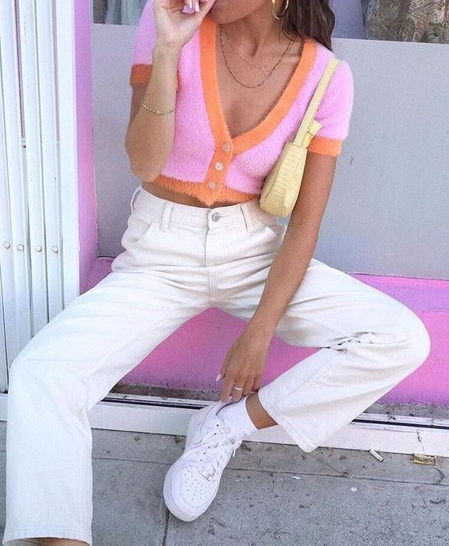
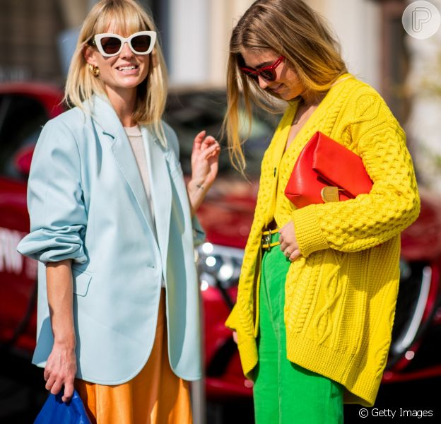

Depois de um período de incertezas por conta da pandemia, as tendências para Primavera/ Verão 2023 chegam anunciando uma têndencia mais leve, feminina criativa, confortável, e muito mais.
As cores vibrantes roubaram a cena nas passarelas em 2022, já chega do básico pretinho e branco. É A HORA de inovar e ousar no guarda-roupa brasileiro!
A moda sempre aparece como uma linguagem expressiva bastante relevante de uma sociedade que cada vez mais se apropria de sua voz – muitas vezes sem usar palavra alguma -. Sendo assim, após meses marcados por perdas, desesperança, medo e privação, a moda do Verão 2023 surge como um grande e alto grito de autonomia: o desejo de nos permitir e sentir vivos novamente nunca foi tão almejado.

